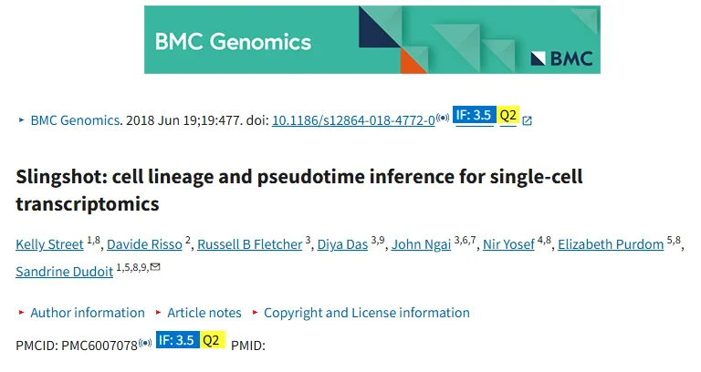
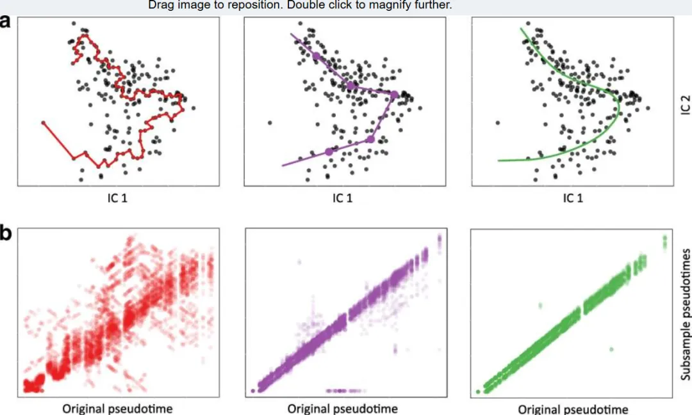
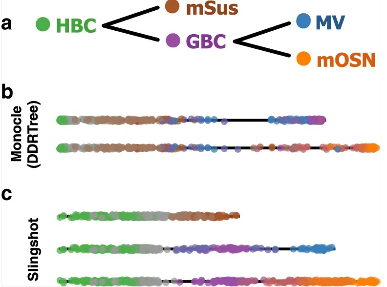
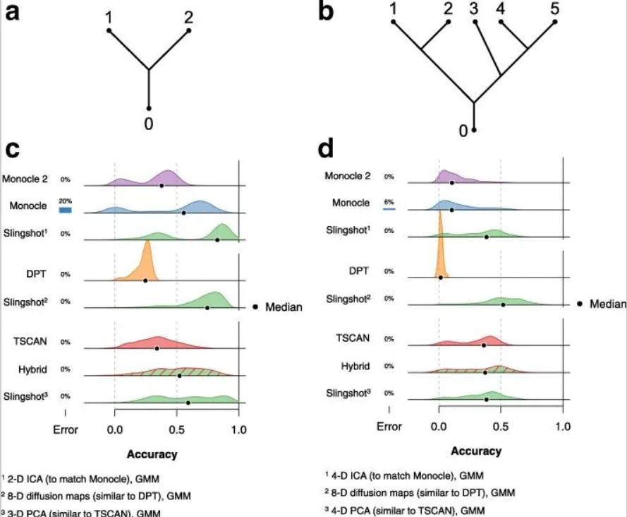
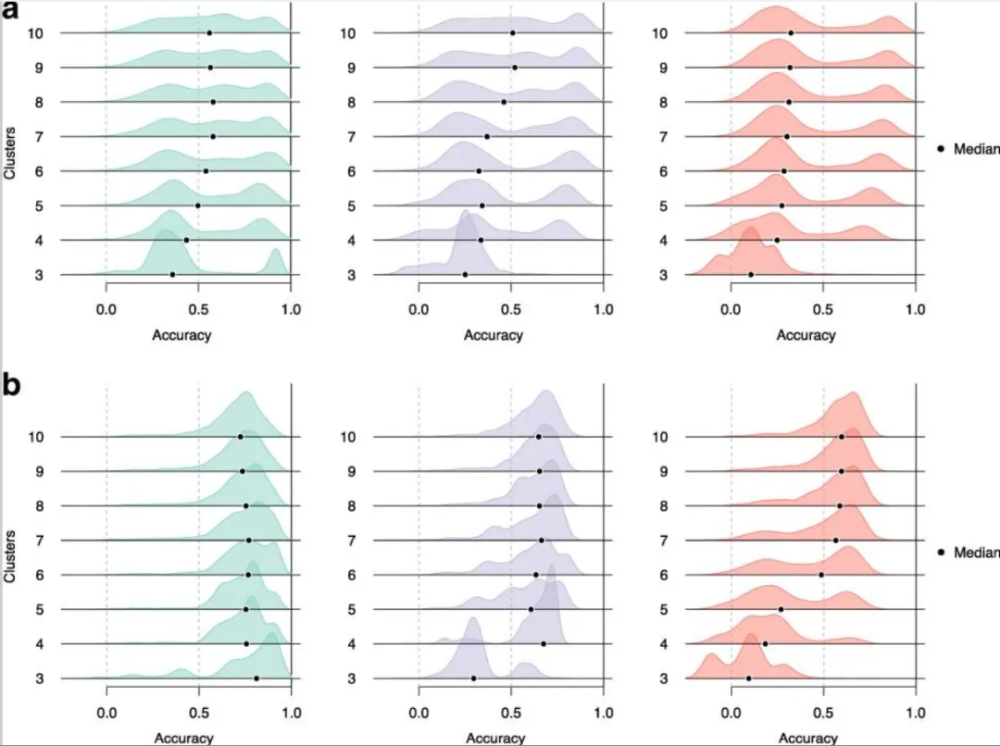

《BMC Genomics》：Slingshot细胞谱系及拟时序推断
原文：https://mp.weixin.qq.com/s?__biz=MzAwMzIzOTk5OQ==&mid=2247529396&idx=1&sn=cffddfd4d0a8692204125efa376871ec&chksm=9b3c0ae4ac4b83f2140206dc9c944012c9a5b23883e8c171591547d84dd02b6b979f1214d6dd#rd 合集：文献速递
一、写在前面
本次分享的是2018年发布于《BMC Genomics》的文章****，**** 感兴趣的同学可以看看原文：Kelly Street ,Davide Risso, Russell B Fletcher,et al."Slingshot: cell lineage and pseudotime inference for single-celltranscriptomics" ，BMC Genomics, 2018 Jun 19;19:477.doi: 10.1186/s12864-018-4772-0

单细胞转录组技术能够解析复杂细胞群体的异质性，尤其在干细胞分化、发育轨迹等研究中具有重要价值。然而，准确推断多分支细胞谱系（如发育过程中的分化路径）和伪时间（pseudotime）（反映细胞分化进程的连续变量）仍是计算生物学中的挑战。传统方法如Monocle、TSCAN等在处理多分支或噪声数据时存在局限性。
Slingshot是一种从单细胞基因表达数据推断细胞谱系和伪时间的新方法。Slingshot被证明可以正确识别一到三个分支轨迹的生物信号。该模拟研究表明，Slingshot推断出的伪时间比其他领先方法更准确。正在学习单细胞与拟时序分析的同学不妨看看：scRNA-seq数据分析小白全程班、一文学会四种scRNA-seq轨迹分析
如果需要数据分析指导 、生信热点全文复现 、自测数据个性化分析 辅导、常态化实验学习，欢迎联系客服微信[Biomamba_zhushou]
二、 Slingshot方法的核心创新
Slingshot是一种两阶段算法，旨在从单细胞转录组数据中推断细胞谱系和伪时间：
-
谱系结构推断：基于细胞聚类构建最小生成树（MST），识别全局谱系分支结构。用户可半监督地指定起始或终止聚类，提升生物学解释性。
-
伪时间估计：通过同步主曲线（simultaneous principal curves）拟合每个谱系的平滑轨迹，将高维数据映射为一维伪时间变量。该方法在噪声数据中表现稳健，支持多分支轨迹 。
2.1 谱系结构推断（Lineage Identification）
2.1.1. 输入与预处理
输入数据：
细胞表达矩阵：n个细胞 × J个基因的标准化表达矩阵（如log归一化后的读数值）。
降维矩阵（推荐）：n×J’ 的降维坐标（如PCA、t-SNE、UMAP），J’ << J，避免高维空间距离失效。
细胞聚类标签：通过k-means、GMM等算法获得的K个细胞簇（每个簇对应一种细胞状态）。
2.1.2. 最小生成树（MST）构建
目标：将K个细胞簇视为节点，构建全局分化路径。
关键步骤：
-
距离度量：采用考虑簇形状的马氏距离（Mahalanobis-like distance）：
-
软聚类支持：若聚类结果为概率分布（如GMM），加权计算均值与协方差矩阵。
-
MST生成：基于上述距离构建最小生成树，默认以最大直径簇为根节点，或允许用户指定根节点（半监督模式）。
2.1.3. 生物学监督机制
-
初始状态指定：用户指定根节点（如干细胞簇），MST从根节点出发生成所有可能路径。
-
终末状态约束（可选）：用户指定终末簇（如成熟细胞簇），Slingshot将终末簇连接到最近的非终末簇，优化路径生物学合理性。
-
分支检测：MST中每个分支节点对应一个分化事件（如二叉、三叉分支），形成多谱系结构。
2.2 伪时间估计（Pseudotime Inference）
2.2.1. 同步主曲线（Simultaneous Principal Curves）
目标：为每个谱系拟合平滑曲线，将细胞投影到曲线上获得伪时间。
技术流程：
初始化 ：基于谱系的MST路径（簇中心连线）定义初始曲线，而非传统主成分（加速收敛）。
迭代优化 。
-
投影与伪时间计算 ：将细胞投影到当前曲线上，以弧长作为伪时间（起点为0）。
-
曲线更新 ：
-
单谱系 ：对每个降维轴，用平滑样条函数（smoothing spline）拟合伪时间与坐标的关系，更新曲线形状。
-
多谱系同步拟合 ：引入收缩（shrinkage）机制，使共享路径的曲线向平均曲线收缩，确保伪时间一致性。
-
-
收敛判断 ：当细胞投影距离的平方和变化小于阈值时停止迭代。
2.2.2. 多谱系伪时间分配
细胞权重 ：根据细胞到各谱系曲线的投影距离计算权重，权重高的谱系主导该细胞的伪时间。
伪时间一致性 ：共享路径细胞的伪时间在不同谱系中高度一致（收缩机制保证），分支后逐渐分化。
2.3 实验验证与参数设置
Slingshot工具被应用于三个单细胞RNA-Seq数据集（HSMM、qNSC和OE），以验证其在谱系推断和伪时间推断方面的性能。这些数据集涵盖了不同的生物学背景和细胞类型，为评估Slingshot的通用性和准确性提供了丰富的测试场景。
2.3.1. HSMM数据集
HSMM数据集包含212个人类骨骼肌成肌细胞，用于研究其发育成成熟肌管的过程。该数据集是一个单一谱系的示例，分析中去除了一个污染的间质细胞群。研究中使用了Monocle生成的聚类标签以及通过k均值聚类获得的标签，并将数据表示为通过ICA获得的二维数据。Slingshot在该数据集上的应用展示了其对单一谱系数据的处理能力，能够准确地推断出细胞的发育轨迹。
2.3.2. qNSC数据集
qNSC数据集包含101个成年小鼠海马静止神经干细胞及其直系后代，这些细胞参与神经发生。该数据集的分析重点是细胞异质性和连续时间发育动态。Slingshot在该数据集中不仅关注了主要的IPC谱系，还描述了两种可能的细胞命运的发育轨迹。这表明Slingshot能够处理复杂的谱系结构，并在存在多个分支时提供全面的分析。
2.3.3. OE数据集
OE数据集包含616个成年小鼠嗅上皮细胞，追踪静止干细胞发育成三种独特的终末细胞命运。该数据集的分析展示了Slingshot在处理多谱系数据时的能力，能够准确地识别出不同的发育路径。
2.4 模拟研究
为了进一步检验Slingshot的性能，研究者使用Bioconductor R包splatter生成了人工单细胞RNA测序数据集。模拟研究分为两部分：第一部分包含两个分支谱系，细胞数在120到1500之间变化；第二部分包含五个分支谱系，细胞数在220到1320之间变化。通过调整基因在路径上的差异表达概率，研究者模拟了不同的信噪比场景，以评估Slingshot在各种条件下的表现。
在聚类方法的选择上，Slingshot展示了对层次聚类、k均值聚类和高斯混合模型的稳健性。此外，研究者还通过Kendall等级相关系数评估了Slingshot与其他谱系推断方法的性能，结果表明Slingshot在推断伪时间与真实伪时间之间的一致性方面表现出色。
三、结果介绍
3.1 在真实数据集上的噪声鲁棒性：
首先使用人类骨骼肌成肌细胞（HSMM）数据集的子集对一些知名方法的稳定性进行了检验。其中，Monocle 方法在单个细胞上构建 MST，并根据 PQ 树沿着 MST 的最长路径对细胞进行排序，是所比较的方法中最不稳定的。其绘制的路径高度可变，甚至对少量噪声也很敏感。相比之下，基于簇的 MST 方法和主曲线方法在类似自举的样本上表现出稳定性。基于簇的 MST 由于分段线性路径的顶点，多个细胞通常会被分配相同的伪时间，对应于顶点的值。主曲线方法是最稳定的方法，但在更复杂的数据集上，它有明显的局限性，即只能表征单个谱系。这也是将主曲线扩展以适应多个分支谱系的原因。

注：图a展示了三种不同的谱系推断方法在原始数据集和50个数据子样本上的细胞排序情况：
-
Monocle方法（红色）：通过在所有细胞上构建最小生成树（MST），识别最长路径来推断细胞排序。
-
Waterfall和TSCAN方法（紫色）：通过聚类细胞并用MST连接聚类中心来推断细胞排序。这里聚类是通过k-means方法进行的，k=5。
-
Embeddr和Slingshot方法（绿色）：使用主曲线方法，即通过非线性拟合数据来推断细胞排序。
所有方法都使用了独立成分分析（ICA）进行降维处理。
图b展示了基于50个数据子样本的伪时间与原始数据集伪时间的散点图。从图中可以看出：
-
左图：红色表示Monocle方法的伪时间比较。可以看到，伪时间在原始数据和子样本之间的相关性较差，说明Monocle方法在子样本上的稳定性较差。
-
中图：紫色表示Waterfall和TSCAN方法的伪时间比较。这些方法的伪时间在原始数据和子样本之间的相关性较好，说明这些方法在子样本上的稳定性较好。
-
右图：绿色表示Embeddr和Slingshot方法的伪时间比较。这些方法的伪时间在原始数据和子样本之间的相关性最好，说明这些方法在子样本上的稳定性最好。
3.2 多谱系推理
在分析嗅觉上皮（OE）数据时，Slingshot利用局部监督标记成熟的支持细胞（mSus）、微绒毛细胞（MV）和成熟的嗅觉感觉神经元（mOSN）作为终端状态，尽管只有第一个对最终的基于簇的MST有影响。Slingshot推断出的谱系结构建立了两个分支的顺序，并随后得到了验证。具体来说，证明了支持细胞是通过水平基底细胞（HBC）的直接转换产生的，而微绒毛细胞和神经元细胞则需要一个中间的、增殖状态。
Slingshot还允许使用一种形状敏感的距离度量，这种度量受到马氏距离的启发，它根据两个簇的协方差结构来缩放簇中心之间的距离。这与Waterfall和TSCAN中使用的基于簇中心的标准欧几里得距离不同，后者未能利用簇的形状，导致在HBC分化的早期错误地识别了一个虚假的分支事件。而Slingshot能够正确识别与先前生物学知识一致的谱系，而其他谱系检测方法则没有。例如，Monocle 2只识别出两个谱系，其中一个以球状基底细胞（GBC）为终点，这是一个已知的过渡状态，而两个谱系都包含支持细胞和微绒毛细胞，这些是已知的独立谱系的终点。

注：嗅觉上皮（OE）数据集。在三谱系 OE 数据集上，Slingshot 和 Monocle 2 推断出的每个谱系的伪时间变量。图（a）：细胞类型之间已知的生物学关系。图（b）：对于 Monocle 2，我们使用 DDRTree 算法获得数据的二维表示，并根据 HBC 细胞簇中细胞占比最高的情况选择起始状态。图（c）：对于 Slingshot，我们使用前五个主成分（PCs）并通过 RSEC 对细胞进行聚类。将 HBC 细胞簇指定为起点，mSus 细胞簇指定为一个终点；其他终点在无监督的情况下确定。
3.3 上游计算选择的稳健性
数据集模拟 ：
为了对不同的谱系推断方法进行更定量的比较，并检验Slingshot对上游计算选择的鲁棒性，研究者们使用Bioconductor R包splatter生成的合成数据集进行了一项模拟研究。在研究的第一部分，所有模拟的数据集都包含一个初始路径，该路径分化为两个不同的谱系（见图4a）。在研究的第二部分，每个数据集都是从一个更复杂的分支结构模拟出来的，包含五个不同的谱系（见图4b）。对于两谱系部分的模拟研究，生成了1200个合成数据集，而对于五谱系部分，模拟了300个数据集。
推断的伪时间准确性的测量方法如下：对于每个真实的谱系，根据真实和推断的伪时间变量之间的Kendall秩相关系数，识别所有推断的谱系中的最佳匹配。将这些值平均到所有真实谱系上，就得到了特定方法在特定数据集上的准确性得分。与标准的皮尔逊相关系数一样，Kendall秩相关系数的值在-1到1之间，值越接近1表示推断的伪时间和真实伪时间之间的一致性越好。
准确性测量 ：
依据真实和推断的伪时间变量之间的肯德尔等级相关系数，为每个真实谱系在所有推断谱系中找到最佳匹配。
对所有真实谱系的这些值求平均，得到特定方法在特定数据集上的准确度分数，肯德尔等级相关系数值在 - 1 到 1 之间，越接近 1 表明推断和真实伪时间之间一致性越好。

注：图a展示了两谱系情况下的分支结构。图b展示了五谱系情况下的更复杂分支结构。图c和图d：这两个图展示了不同方法在两谱系和五谱系数据集上的准确性得分分布。每个密度图旁边的条形图表示在该方法返回错误数据集的百分比。
以下是对这些结果的解释：
两谱系情况
-
Monocle：大多数策略表现良好，通常产生双峰分布的准确性得分，一个峰值接近0，另一个较大峰值在0.5或以上。然而，Monocle比其他任何方法更频繁地返回错误。
-
Monocle 2：比Monocle更一致，但总体准确性较低。它很少返回接近0的得分，并且显示出较少的双峰性，特别是在使用四维或五维RGE时。总体准确性得分较低可能部分是由于它识别出的大量虚假分支事件。
-
Diffusion Pseudotime (DPT)：由于大量细胞缺少分支分配，导致准确性得分人为降低。在两谱系和五谱系情况下，不使用分支信息的DPT-1策略达到了最高的中位数准确性得分。
-
TSCAN：使用全分位数标准化的TSCAN产生的准确性得分与Monocle 2相当。当运行推荐的预处理步骤时，TSCAN的表现稍差，特别是在没有全分位数标准化的情况下。混合方法（使用TSCAN进行降维和聚类，然后使用Slingshot进行伪时间推断）产生了最高的中位数准确性得分。
五谱系情况
-
Monocle和Monocle 2：继续识别大量虚假谱系，并且样本大小与其推断的谱系数量之间仍然存在强烈的相关性。
-
Slingshot和TSCAN：在所有谱系类型中通常表现优于其他方法。Slingshot在两谱系和五谱系数据集上的表现相对稳定，准确性得分分布较窄，表明其在不同数据集上的表现较为一致。这些结果表明，Slingshot和TSCAN可能是处理复杂谱系结构时更可靠的谱系推断工具。
2.3.4 对聚类（方法）的鲁棒性
该研究通过模拟数据集验证了Slingshot算法在单细胞轨迹推断中的核心优势与局限性，其核心结论可总结为以下三点：
1. 聚类方法鲁棒性
Slingshot通过”同步主曲线（simultaneous principal curves）“对基于聚类的MST（最小生成树）进行平滑处理，使其结果对具体聚类方法（层次聚类/k-means/高斯混合模型）的选择具有较强鲁棒性。相比之下，TSCAN等直接将细胞投影到聚类中心构建MST的方法，因依赖聚类中心位置而结果波动较大。
2. 聚类数量K的关键影响
实验表明，Slingshot的表现更敏感于聚类数量K 而非具体聚类方法：
K过小：可能导致分支事件漏检
K过大：可能引入虚假分支
适度K值：即使降维质量不同（如4D-PCA与3D-PCA），仍能保持结果稳定性
3. 方法局限性
虽然主曲线平滑增强了稳定性，但本质上仍属于”基于聚类的MST方法”，无法完全规避此类方法的固有缺陷：
-
正确识别全局谱系结构的前提是初始聚类能近似反映真实发育轨迹
-
极端K值导致的过分割/欠分割问题与其他同类方法存在共性
研究通过两系谱拓扑模拟数据验证，当初始聚类能大致捕捉发育轨迹时，Slingshot通过主曲线实现了对局部聚类波动的强容错能力，这使其在单细胞轨迹推断中具有更优的实用价值。

注：在模拟的双谱系数据集上，Slingshot的伪时间推断对不同的聚类方法表现出良好的稳健性。研究使用了分层聚类、k-means和高斯混合建模（GMM）等不同的聚类方法，并在不同的聚类数量（K）下进行了测试。
结果显示，Slingshot在不同的聚类方法和K值下均能生成相似的准确性得分分布。当K=3时，Slingshot通常无法检测到分支事件，导致生成的伪时间与真实谱系不完全匹配。随着聚类数量的增加，Slingshot能够更准确地推断出谱系结构和伪时间。当K值较高时，准确性得分开始缓慢下降，这可能是由于Slingshot开始过度拟合并识别出更多的虚假分支事件。
此外，研究还发现，使用四维PCA进行降维时，Slingshot能够产生更一致的高准确性得分，而三维PCA则导致得分高度可变。这表明在使用Slingshot时，选择合适的降维方法和聚类数量对于获得准确的伪时间推断至关重要。
四、文章讨论
1. 方法概述：
Slingshot通过将谱系推断问题分为两个步骤来解决：首先是全局谱系结构的识别，其次是每个谱系中细胞的伪时间推断。这种方法结合了高度稳定的最小生成树（MST）和灵活的多分支主曲线拟合技术，能够在噪声数据中稳定地识别复杂的谱系结构。
-
全局谱系结构识别：通过在细胞簇上构建最小生成树（MST），Slingshot能够识别谱系的数量和分支位置。
-
伪时间推断：使用同时主曲线方法拟合每个谱系的平滑曲线，从而为每个细胞推断出伪时间。
2. 性能表现 ：
-
准确性：在模拟数据集和真实数据集上，Slingshot能够准确推断出单个谱系和多分支谱系的结构。
-
鲁棒性：Slingshot对噪声和不同的聚类方法表现出较高的鲁棒性，即使在不同的降维技术和聚类数量下，也能保持稳定的伪时间推断结果。
-
灵活性：Slingshot允许用户在分析中加入局部监督，例如指定起始簇和终端簇，从而在不牺牲灵活性的情况下提高结果的生物学一致性。
3. 应用场景 ：
-
不同数据类型：Slingshot适用于多种单细胞数据类型，包括RNA测序数据和质谱细胞术数据。
-
现有分析管道集成：该方法设计灵活，能够与现有的单细胞数据分析管道无缝集成。
4. 优势总结：
Slingshot在处理单细胞基因组学数据的谱系和伪时间推断中表现出色，特别是在处理复杂分支结构和噪声数据时。它提供了一种灵活且鲁棒的方法，能够准确推断细胞的发育轨迹，并且可以与多种降维和聚类技术结合使用。
5. 实验结果：
在模拟数据集和真实数据集上的实验结果表明，Slingshot能够准确识别复杂的多分支谱系结构，并且在不同噪声水平和细胞数量下表现出较高的鲁棒性。例如，在嗅觉上皮数据集中，Slingshot能够正确识别复杂的三谱系结构，而其他方法则无法做到。
Slingshot是一种强大且灵活的工具，适用于单细胞基因组学数据的谱系和伪时间推断。它结合了处理噪声数据所需的稳定性以及识别复杂结构的灵活性，能够为动态基因表达分析提供关键的谱系推断步骤。

如何联系我们

 留一个领取资料、免费两周学习版服务器的微信号[Biomamba_zhushou]，方便各位随时交流。同时我们也构建了交流群矩阵，欢迎大家入群讨论。
大家可以阅读完这几篇之后添加给生信入门初学者的小贴士
如何搜索公众号过往发布内容
留一个领取资料、免费两周学习版服务器的微信号[Biomamba_zhushou]，方便各位随时交流。同时我们也构建了交流群矩阵，欢迎大家入群讨论。
大家可以阅读完这几篇之后添加给生信入门初学者的小贴士
如何搜索公众号过往发布内容
已有生信基地联系方式的同学无需重复添加

 您点的每个赞和在看，我都认真当成了喜欢
您点的每个赞和在看，我都认真当成了喜欢